Gilles Châtelet
Chapter 1: The Enchantment of the Virtual
Chapter 2: The Screen, the Spectrum and the Pendulum
Chapter 3: The Force of Ambiguity
Chapter 4: Grassmann's Capture of the Extension
Chapter 5: Electrogeometric Space
We offer a commentary on the first section (1844) of Grassmann’s Theory of the Extension1. Bear in mind that its introduction won little admiration from the mathematicians of Grassmann’s time: it contrasted sharply with the growing hegemony of the axiomatic style and his publisher advised Grassmann to leave it out of the second edition. In his study of the development of mathematics in the nineteenth century, F. Klein recognizes him as a geometer of genius, but does not mix his words in speaking of some of his students as a sect of cranks.2 Grassmann’s mathematical discoveries were only really understood towards 1880 (and spread by Peano and Burali-Forti), and it took until 1985 for certain contemporary mathematicians (Rota and his students) to do justice to the ‘implied’ product (symmetrical with the ‘external’ product) and to find its possible uses in combinatorics.
It is clear that Grassmann had a philosophical background and adopted the idea of the German idealists that science can by no means be reduced to the adoption of operationally fertile rules and to the production of simply deduced truths. A mathematical text should also put the reader in a position to have an ‘overview’ [Ubersicht]. This overview is not a general perspective that skims over the details, rather it feeds on the specificity of the singular to reach the plane where the intuitive and the discursive are born synchronously. This type of demand identifies Grassmann with the philosophies of nature: Schelling and Hegel rejected the finished separation of object and subject and wanted to conceive an unobjective knowledge of the being-in-the-world which however would not be nothing. It is Grassmann’s particular achievement to have understood that the reader must, within the mode of the expression of grasping the extension, be capable of recognizing degrees homologous to the stages crossed by his understanding.
Space thus appears as a visible understanding and the understanding as an invisible space.3 The point is to clarify the link between the process of individuation of the knowing subject and the process of articulation of the forms of the grasping of space. It will come as no surprise, then, to see a dialectic of the lateral and the transitive unfold in Grassmann’s oriented multiplication (the famous anticommutative product). Following on from Oresme, Grassmann uses the full power of the diagram — base, height, amplitude — (see chapter II) and shows that the positing of one dimension calls another. He can thus free himself from the constraints of the spatial (where dimensions are paralysed and take account only of the interval residues between things). This is why he manages to grasp a gesture that generates what he calls the ‘extension formations of order ’, without the help of any geometric ‘realism’.
This dialectical ‘generation’ [Erzeugung] undoubtedly constitutes Grassmann’s most interesting contribution to geometric philosophy. He shows that the orientation is an overhanging device which does not sink into the indefinite and which can reactivate itself three times by breaking and regrasping the allusive arrangement that it posited: the capture of the extension opens up by first of all conferring a mobility on the point in order to generate a dimension: it continues with the invention of the external product, which permits an ascending journey through the dimension; it finishes by rebalancing this rise with a symmetrical process relating to an ‘implied’ product.
Merleau-Ponty writes: ‘An ontology that avoids mentioning nature shuts itself away in the incorporeal and, for this very reason, offers a fantastical image of mankind, of the mind, of history.’4 He could have addressed the same warning to all philosophy (and perhaps to all science!) which claims to know only this extended space, always given opposite us, this receptacle containing, willy-nilly, particularities individuated by Descartes and Newton’s monstrous origin-point.
What is left alive in this flow which is forever flowing out of itself, what remains of this perseverance in exhaustion and indefiniteness? The ‘particularities’, subjugated then abandoned by the absolute from which they are forever detached, can only enter a ferocious contest for places. ‘Spaces’, extended space is only a final product, a transparent aggregate of absolutely external, rigorously current, clearly linked parts. No envelopment or articulation is accorded to these empty shells. They collide with one another impatiently: extended space is indeed ‘this absolute being outside itself which is also purely and simply uninterrupted, a perpetually other being which is identical to itself’.5 For these bloodless beings, inconsistent with their concept, permanent excrescences, always orphans of the gesture which posits them, know only the cruelty of the laws of impact and rarity. All positions sour into petitions, and it is Schelling’s great merit to have seen that the homogeneous exteriority, supposedly ensuring the peaceful coexistence of things, succumbs to dispersion and exacerbates contrarieties. Extended space, as the asserted form of things taken as separate, merely serves to sustain a treacherous war between dead natures. A war moreover without stake: all places are basically the same!
Extended space is incapable of keeping a promise: the possibles that it hands out shamelessly are only possibilities taken as possibilities, without hope of being redeemed by impending actualization, for these are only actualized possibilities — taken as possibilities. Extended space gives itself unreservedly because it is over, finite.
However, Plato saw that the receptacle is a part of the intelligible, but in a very obscure way. Space is that within which something is being hatched and this is not necessarily chaotic. If he wishes to cry with the poet: ‘Space was splendid!’ the philosopher must remain at the outposts of the obscure, accept full-on the verticality of Being, the springing forth of dimensions; he must let himself be haunted by space: the capture of the extension would not be satisfied with ‘a knowledge which, like that of ordinary geometry, is completely abstract and deprived of life.’6 This ordinary geometry contents itself with merely measuring the distances between extended figures, whereas what is necessary is to apprehend the positivity of the going out of itself, of this permanent act of autoproduction, without idolizing it and without forgetting that the truth positive is that, according to Hegel, which remembers being posited. This positive is no longer the headstrong insistence of a petition of existence, and true geometry must grasp the instant where space finally quivers with the virtualities that inhabit it and invites us to experience dimension as the invention of an articulation. It leads us to the hand so to speak to relearn the motion that at once separates and links and to be able to capture in a simple fragment the direction and continuity of a gesture. This geometry thus demonstrates its ability to reactivate a productivity that is never extinguished in its product and reveals that the same mind is at work in the productions of nature and the creations of liberty.7
This is what makes Grassmann’s theory of the extension remarkable. It represents a genuine pedagogy of the forms of the grasping of space, and for the apprentice geometer who ‘can think freely, the assimilation of knowledge then becomes a true reproduction provided he is initiated into the subject in a “scientific” [wissenschaftliche] manner.’8 Like philosophy, geometry offers a ‘scientific’ character if it leads the reader to the necessity of admitting each singular truth (deduction) and above all if it places him in a situation where he can have an ‘overview’; what Grassmann calls a ‘putting in order’.9 This is what distinguishes Grassmann’s (and certain of his contemporaries’) philosophical science from ours, which is more centered on verification and prediction. Grassmann demands an explicit articulation between operation and intuition. This demand is by no means to be confused with a subsidiary ‘supplement of soul’, but it is clearly trumpeted as that which allows science to lay claim to being systematic, and to equality with philosophy:
Mathematical method proceeds from the simplest to the most composite concepts and thereby obtains, by the liaison of the particular, new and more general concepts. Whereas in philosophy the global overview [die Ubersicht uber das Ganze] predominates …, in mathematics it is the progression from particular to particular that predominates, and each completed development forms in the whole only a link in the following progression. This difference in method is present in the concept; for in philosophy the unity of the idea is at the root, particularity is deduced; by contrast, in mathematics, particularity is at the root, whereas the idea is at the end, it is the anticipated goal. Often, there are demonstrations where it is not possible to know at the beginning whether there was not a preceding theorem, to which they lead, demonstrations by which — suddenly and unexpectedly — the demonstrable truth is finally arrived at, each step having for a certain time been followed blindly and by chance. Such a demonstration is perhaps entirely satisfactory from the point of view of rigour, but it is not scientific [wissenschaftlich]; the second requirement is missing: the overview.10
This ‘overview’ is not the dilettante’s distant contemplation; it takes part in the action: it is an intellectual intuition,11 in the sense intended in the philosophy of nature. It transports us to that privileged zone where intuition and discursivity become knotted into a living unity. It is neither a priori nor a posteriori; it is contemporaneous with what it grasps. It takes each being at its own level, without decomposing it into elements or placing it in a vaster stock of reality.
This scientific process can by no means be reduced to the adoption of a package of rules — no matter how operationally fertile. Thanks to it, the reader must be capable of recognizing, in the mode of exposition of the forms, degrees homologous to the stages of his own progress. The capture of the extension does not concern only the knowledge of the subject, it feeds itself on the individuation of knowledge of the subject. One does not construct space by assembling forms like the pieces of a Meccano set (one would then take the articulations for granted). Moreover, it is not a matter of constructing space, but of letting oneself be bewitched by a rhythm: that which knots and weaves homogeneities gorged with tensions. Much more than Hamilton’s ‘Order in Progression’,12 Grassmann’s capture of the extension is an individuation in progression: that of the reader, who can now sense ‘directly following the truth’; he becomes accustomed to sketching out singular motions of space in progress: to know, it is first necessary to be penetrated by the rhythm of learning. It is in this sense that the capture of the extension progressively makes the mind its own:
Presentiment [Ahnung] appears foreign to the domain of pure science, above all to the domain of mathematics. However, without it, it is impossible to find any new idea … It is — if conceived in the right way — the look that seizes in one go any development that leads to the new truth, but comprising instants that have not yet become exposed. It is for this reason that the presentiment can at the beginning only be obscure [dunkles Vorgeful]. That is why scientific presentation is essentially a progression of two series of developments, one of which leads in consequence from one truth to the next and forms the content proper, while the other controls the process itself and determines the form… It has long been the case in mathematics, and Euclid himself provided the model, that of the two series of developments it is normal to value only the one that forms the content proper, while the trouble of finding the other between the lines is left to the reader. Only, although arrangement and presentation of this series of developments are complete, it is nonetheless impossible to make the overview visible at each stage of the latter to whoever should first of all know science, and to put it in a state where it can progress freely and of itself. To do this, it is rather necessary for the reader to be put in the state in which the discoverer of truth ought to be in the most favorable case.13
Like intellectual intuition, the scientific method demanded by Grassmann introduces a knowledge that does not leave the subject/object dualism intact, but, on the contrary, ventures to create the object itself, to assert the fundamental identity of product and productivity. The more precise the mode of articulation that distinguishes between them, the better this identity is conceived. We will not be surprised that the notions of dimension and orientation play such a crucial role in the capture of the extension. They always surreptitiously threaten the neutrality of the observer faced with his object. They cannot be conceived in the same way that one can make certain of a thing. They suggest the existence of an objective knowledge of the being-in-the-world, which is not, however, nothing.
Dimension is neither a property nor an attribute of the finished object. It affects at once the object and its mode of production. I can, of course, know the measurements of this or that thing by iterating a certain gesture (always the same one), moving along an (already chosen) arbitrary standard-unit. This convenient unit is applied onto the object, but it does not involve me in its process of knowledge or production. A conception of the dimension would not be satisfied by so trivial a quantitative point of view: the dimension is not only ‘number’, it is a degree, a rung that has to be climbed. It is part of a thought event where space is measured by the scientist as a further unfolding of a phase, as freeing a relief, as allowing the polarization of a magnitude. Through dimension, the interval, which was merely the residual space contained between two things, becomes charged with tensions and reveals itself as the positive condition for the birth of a structure. The dimension sanctions access to an unexpected degree of Being: it takes the measurement of a process of becoming.
Nor does the orientation spare the dead extension; by articulating a ‘side by side’ with a ‘top’ and a ‘bottom’, it reveals that the juxtaposition has been made in a certain order. In demonstrating a preference, it arouses a permanent power of splitting at the core of what has been posited; it can reactivate itself without being weakened; it can therefore be an integral part of a dialectical generation.
Dialectic is here to be understood as ‘the intelligence that separates and, by very reason of this separation, introduces an order into things and imposes a form on them’;14 dialectic does not abolish difference, it illuminates and deepens it. Generation must be linked with the capacity to demonstrate the elasticity of something. In order to show up the material of space, I must grasp it as an incitement to amplification (erweitern). Space no longer exhausts itself pouring out the same being-other, it regains control of itself by velocity and orientation, and the latter do not vanish in a pure expansion. Space can thus be grasped straight off as existence, in the sense of ‘process beyond oneself, automanifestation’.15 In the same way that Schelling saw in our understanding an invisible nature in the urgent need of reawakening, Grassmann succeeds in provoking our invisible space and in extracting from it increasingly sharp noetic propulsions that allow visible space to reappropriate itself. Dialectical generation is never satisfied with the positions that it has just conquered and will always offer the keys for regrasping the space it accompanies:
Grassmann’s introduction proposes to ‘deduce’ (ableiten) the concept of pure mathematics, that of Ausdehnungslehre.
It is not a question, however, of deducing statements from a body of axioms, but of putting into operation a discipline of discernment that separates degrees of articulation in space and in the mind and that can be applied in dialectics: that of the discrete and the continuous and that of the intensive and the extensive. Grassmann distinguishes (in the manner approved since Aristotle) between the ‘real’ sciences and the ‘formal’ sciences. All give themselves at once as the result of a confrontation with the being represented and produced by thought, but, for the first, the being represented exists by itself whereas, for the second, it is posited by thought:
Thought exists only in relation to a being that faces it [gegenubertritt] and that is represented by it. For the real sciences, this being is independent and exists by itself beyond thought. But, for the formal sciences, it is posited by thought which itself now faces, in its turn as being, a second thought with being, for the formal sciences it rests in particular on a concordance of the second act of thought with the being set down by the first act, that is to say, on the concordance of the two acts of thought. Thus, in the formal sciences, demonstration does not leave the sphere of thought and remains purely in the combination of various acts of thought. To do this, the formal sciences must not set out from axioms as the real sciences do; but the definitions are what form their basis.17
The problematic character of the confrontation induced by the ‘real’ sciences is obvious. For the ‘formal’ sciences, the test is harsher still; this time, reflexive thought rends itself: it has to negotiate with ‘its’ formalism, which now rears up in front of it menacingly. Indeed, even if the proof is produced by a standard series of thought acts, the ‘scientific’ character, in the sense intended by Grassmann, demands an accompanying intention, a ‘setting in order’ of the geometer, which orients him in his research. That is why, according to Grassmann, the formal sciences, almost before they have had time to be posited, explode in a dialectic devoted ‘to the search for unity’ and a mathematics committed to the study of the particular (to the individual in its role as part):
The formal sciences examine either the general laws of thought, or the particular posited by thought; the first is dialectic (logic), the second pure mathematics… As a consequence, pure mathematics is the science of particular being as having become through thought. We call the particular being, taken in this sense, a form of thought [Denkform] or quite simply a form. Thus, pure mathematics is the theory of forms [Formenlehre].18
From this, one might believe that Grassmann remains a prisoner of the dualisms vehemently denounced in the philosophy of nature. The truth is that he succeeds precisely in reforming geometry by discovering a type of oriented liaison which dismisses Raumlehre in favor of Ausdehnungslehre.
The geometer faces two dangers simultaneously; like all mathematicians, he has to tackle the blind proliferation of the particular, but he must also tackle the stubbornness of this ‘real’ space, zealous provider of spatial clichés:
From the concepts established above, it is obvious that ordinary geometry [Raumlehre], like mechanics, refers to a real being: for ordinary geometry, this is space; and it is clear that the concept of space can in no way be generated by thought, it is always faced by a given being. Anyone who would maintain the opposite should immediately subject themselves to the task of deducing the three dimensions of space form the pure laws of thought; a task whose result immediately shows itself to be impossible.19
It is the greatest proof of Grassmann’s talent that he was able to recognize this specificity of geometry. If the latter aspires to a place in the theory of forms (on an equal footing with arithmetic), it must forge a new type of intuition. We will see that the whole introduction and its style of presentation imply an unprecedented effort to grasp in flight the ‘understanding of the understanding’. In the tradition of German idealism, which had set itself the task of the patient exposition of the Absolute, Grassmann mobilizes coiled forces in the very core of space. For the brutal face-to-face with the spatial, which draws the philosopher-geometer into a sterile confrontation with its figures, these distinctions into the continuity of a process, of an intensive involution in which every turn envelops a superior degree of blossoming of forms.
The invention of an articulation grazes the geometric origin of thought with greater subtlety:
The most intimate tie of the forces only takes form with the help of a progressive opening out of the latter, each degree of separation of the forces being marked by the appearance of a new being.20
It is easy to predict that the dialectic of the continuous and the discrete as generation and process of distinction of phases (which presupposes no successivity) will play a crucial role in this ‘deduction’ of the Ausdehnungslehre. Continuous and discrete stand opposite one another like contraries, and it is necessary to take up this hostility fully to illuminate the process that generates and distinguishes them:
Everything that has come into being by thought [jesdes durch das Denken gewordene] can have come into being in two ways: either by a simple generative act, or by a double act of position and liaison. What has come into being by the first method is the continuous [die stetige Form] or magnitude in the narrow sense; what has come into being by the second method is the discrete form or form-liaison [Verknupfungsform].21
The trivial permanence of the diversity of the becoming stetig therefore readily surrenders us the continuous form and its cut-outs: magnitude in the narrow sense. This stetig churns out the process of becoming with the monotony of constant diversity. To this snag-free unrolling, we should oppose the ruptures, the disconnections and all that can manifest the zealous quickness of the discrete and of the acts that posit and link.22 Grassmann then mobilizes a dialectic that dissolves this factitious opposition of discrete and continuous and regrasps it as the moments of a processivity:
The contrast between the Discrete and the Continuous is (like all true contrasts) fluid [fliessender], since the Discrete can also be seen as Continuous and, equally, the Continuous as Discrete. The Discrete is seen as continuous if what is linked is grasped as something that has become, the act of liaison being understood as a moment of becoming. And the continuous is regarded as discrete if singular moments of the Becoming are understood as pure acts of liaison and if what is linked in this way is seen as something given for the liaison.23
We should underline here how different the continuity stetig is form that of flüssig gewordene. The stetig is but the simple acknowledgement of an always-there which ceaselessly exhausts itself in being another: this mediocre continuity, that of extended space, offers itself without resistance to indefinite divisibility. It would certainly be incapable of overcoming contrasts. The latter are only defeated by the generosity of the flüssig gewordene which captures all the riches of the Becoming. Only the abstract splitting of the flux of the becoming into a before and an after legitimated the opposition continuous/discrete. That which is posited and linked — the discrete — can be understood as continuous (as become) and that which ‘flows continually’ can be separated out by the understanding by restoring the disjunction between the liaison and the position. In this last case, what Grassmann calls the ‘singular moments of the becoming’ is paralysed into pure acts of liaison being executed on given terms.
Grassmann next denounces the abstract character of the distinction between position and liaison.24 The point is not to oppose operators to terms, but rather to think of the liaison and the position of the second term as contemporaneous: the latter does not preexist the liaison. Leibniz had already seen that the differential element of a variable cannot be juxtaposed with as an excrescence would be, but articulates an extension that is already available and an intensity that is on the point of spreading out25 (see fig. 1).
The fluidity of the process of becoming will make it possible to overcome the opposition of diversity and equality, as it has just done for the stetig and the diskret:
Each particular becomes so through the concept of the diverse by which it is coordinated with another particular, and through the concept of the equal by which it is subordinated with other particulars to a common type.26 What has become by the equal we can call the algebraic form, and what has become by the diverse form. The contrast between the equal and the diverse is also fluid. The equal is linked to the diverse because two equal terms are separated in some manner and, without this separation, the equal would be but one, therefore equal to nothing.27
Like the contrast continuous/discrete, the equal and the diverse are the result of a polarization; it is thus that algebraic forms ‘become through the equal’ and combinatory forms ‘become through the diverse’ can be distinguished. It is a matter of finding the articulation that makes it possible to pass continuously from the equal to the diverse. A concrete equality never leaves the smooth surface of Parmenides’ One intact; a perfect equality would be irretrievably swallowed up in the identity , and the dialectical balances of chapter III showed us that the equalities always proceed from a process of equalization and disappearance of inequalities, from an overhanging device.
Grassmann defines equality as ‘that which can be mutually substituted in each judgment’. Equality is therefore related to an equilibrium: the term can replace the term without damage, as one standard weight can be substitute for another on the beam of a balance. But this equilibrium must never make us lose sight of the protocol of compensation that made it possible: the recognition of an equality always implies victory over a dissymmetry.
This is what is show in the formula , which distinguishes a right-hand side and a left-hand side. This equality can be understood as ‘ is ’, ‘’, or even ‘ is derived from ’. The forms of the equal and the diverse emerge like the opening of a compass where reveals progressively. Like perfect equality, radical diversity is only an abstraction, if is given as different from , this accepted separation must have mobilized an activity that articulated them in some manner: that which tried them on a balance of Being.
To complete his ‘deduction’ of the theory of the extension, Grassmann intersects the two axes that he has just disengaged. We saw that each of these axes functions like a separation-liaison compass: an ‘embrace’. Their perpendicular presentation, like the diagonals of a square, captures the bursting of the mathematical form into four distinct branches (see fig. 2).
From the intersection of these two contrasts, the first of which relates to the manner of generating [Art der Erzeugung] and the second to the elements of generation [Elemente der Erzeugung], come the four types of forms and the branches of the Theory of forms corresponding to them. That is to say, the Discrete form separates itself first in Number and Combination (that which is linked together). The Number is the discrete algebraic form, tha tis to say it is the gathering of that which is given as equal; the combination is the discrete combinatory form, that is to say the gathering of that which is given as diverse. The sciences of the discrete are thus the theory of numbers and the theory of combinations. In the same way, the continuous form of magnitude separates itself into an algebraic-continuous form or intensive magnitude and into a combinatory-continuous form or extensive magnitude. The intensive magnitude is thus what has become by the generation of the equal: the extensive magnitude or extension is what has become by the generation of the diverse. The former constitutes, as a variable magnitude, the foundation of the theory of functions of differential and integral calculus; the latter constitutes the foundation of the Ausdehnungslehre.28
The discrete side of the forms produced ‘one by one’ by position and liaison, number and combination, is thus balanced by the ‘continuous’ side, that of the forms that have become progressively: the ‘dissolved numbers’29 (functions) and the ‘dissolved combinations’.30
We must now give special attention to the intensive/extensive dialectic which Grassmann used to good effect in his construction of the external product. We have already met (see chapter II) the traditional opposition between intensive and extensive, and have shown how the control of such an opposition by diagrams (those of Oresme and Leibniz) had been associated with the physico-mathematical grasp of the emergence of the dimensions. Remember that the intensive degrees gather the plural into a single determination: they claim to exhaust no multiplicity, but measure a more or less great level of completion in an order of perfection. On the contrary, the extensive quantification enters aggregates into the accounts of collating units. It evaluates the multiple by decomposition: dispersion is essential to it.
Grassmann is not aware that this tension between the gathering and dispersion penetrates all four forms of mathematics:
An intensive magnitude is so to speak a dissolved number, whereas the extensive magnitude is the dissolved combination. The dispersal of elements is essential to the extensive magnitude, as its the fixing of this magnitude as a separate being-in-the-world; the generative element [das erzeugende Element] presents itself here as something that changes [als ein sich anderndes], that is to say as something that passes through a variety of states, and the set of these different states constitutes exactly the domain of the extensive magnitude. However, for the intensive magnitude, it is its generation that provides a continuous series of states that remain equal among themselves and whose quantity is precisely the intensive magnitude.31
The example of the force and the segment, given by Grassmann, clearly illustrates the contrast between the diagrams connected with the intensive and those connected with the extensive:
The best example of extensive magnitude is that of a segment [Strecke] whose elements are essentially dispersed, and it is precisely as such that they constitute the line as an extension. For an example of intensive magnitude we can take a point endowed with a certain force, because here the elements do not separate, but only represent themselves in the growth [Steigerung]; they therefore form a certain stage of the growth.32
The two diagrams below (see fig. 3) oppose the intensive and the extensive: the force applied at one point, without any dispersion, exteriorizes a pure verticality33 and contrasts with the extensive segment, which is essentially dipsersed.
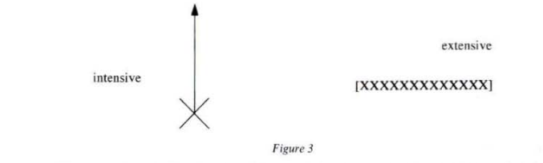
But, as soon as the question of generation is posed, these intuitive clichés dissolve. Force can also be grasped as being in the process of diffusing itself and the dispersed points of the segment can be gathered together again in a length:
All real magnitude can be seen in two ways, as intensive or extensive, that is the line is also seen as an intensive magnitude if the way in which its elements are dispersed is disregarded and only the quantity of elements is noted and, likewise, the point endowed with a force can be conceived of as an extensive magnitude by imagining the force in the form of a line.34
We know that the opposition of the intensive and extensive can be overcome by inventing a compression-exposition device which distinguishes, compresses, and unfolds the degrees, grasps their assembly and dispersion contemporaneously. This makes it possible to clarify some of Grassmann’s definitions. For example, that of the number: ‘The number is the gathering together of that which is posited as equal.’
The ‘trivial’ formula (1) distinguishes and links together the ‘ordinal-intensive’ and ‘cardinal-intensive’ sides of the number. The sign ‘=’ makes a hinge between the two sides of the formula (1) and shows that (the ordinal pole) envelops the juxtaposition of the units. We again find Oresme’s triptychs: here, equality articulates a number as a step (as a degree, as a Zahl) and as that which counts (as a cardinal, as an Anzahl). One can even see in this a means of understanding addition as an amplitude, a way of enveloping an ordination and an addition (one and one and one, etc).
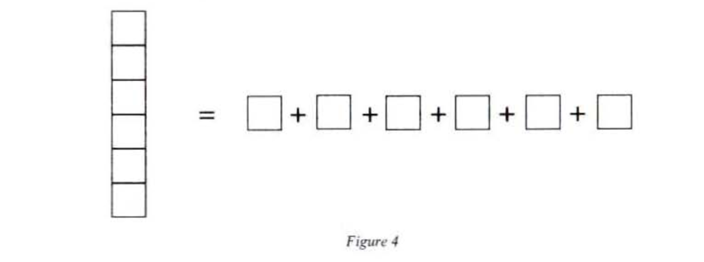
Figure 4 makes the articulation of the dissemination and intensification obvious. This type of diagram makes an allusion to the emergence of a dimension: a plane is needed to combine the vertical and horizontal. To grasp a dimension is to invent a diagram where the pure dispersion of what Hegel called aussereinandersein (the ‘being outside one another’)35 and the exuberance of the intensive balance one another out: the unfolding of the latter nourishes the mobilization and straightening of the former, and vice versa.
A continuous version of formula (1) exists: Stokes’ formula, which balances ordinal magnitude and cardinal magnitude:
It would be no exaggeration to say that, without this formula, modern physics would collapse. It must also be linked with a device of continuous exposition of degrees — a ‘base-roller’ device (see chapter III) — which articulates two extensions and overcomes the opposition of the force and segment emphasized by Grassmann. The latter observed quite rightly that the intensive magnitude ‘does not come undone’ in itself. It merely spreads out in the mode of increase. The intensive is no longer prisoner of its indivision; promoted to a capacity for spreading out, it can at last ‘come undone’ as a length. As a result, the length of a segment can no longer be reduced to a dead distance; it assesses the completion of a journey: the trajectory is that which makes use of space. The extensive quantity, taken ‘alone’, contents itself as it were with visiting already given places, with the indifferent adoption of diverse ‘states’, whereas now it captures the element in its springing forth.
Grassmann’s definition of the combination, ‘The gathering together of that which is posited [posé] as diverse’, is also linked with a compensation device, illustrated by the formula (3):
The symbol does grasp in the unity of an act what the right-hand side shows as the aggregate of different elements. There again, the sign ‘=’ makes it possible to display a plurality in multitude. Equality appears as the form of the ‘doing’ and ‘undoing’. The articulation ‘=’ sanctions a game of summation-decomposition in which the set ‘’ and the elements ‘’ are but the abstract moments.
We know that the combination assumes diversity. The Ausdehnungslehre as theory of the ‘dissolved combination’ will have to inscribe this diversity in a continuous becoming, grasp it as it emerges: we must not bow before the headstrong solidity of a segment , but should denounce it as the mere paralysed unit of a motion, the stump of dimension that has been abandoned by a mobile point unfolding a length.
It is in fact the concept of the mobile point which is at the heart of this process of dissolution of the crude contrast between the static point and the places already formed and presented together in the compact form of the segment:
The continuous process of becoming, separated into its motions, appears as a continuous formation [stetiges Entstehen] … We arrive at the concept of continuous change. We call that which undergoes this change the generative element and, whatever state the generative element takes on is its change, it is an element of the continuous form. Consequently, the extension form is the totality of all the elements into which the generative element transforms itself in changing continuously.36
The static point is only an element. It is only only one of the different states visited by the mobile point, what Grassmann called the generative element. The generative element turns the segment into a trajectory.
We return to Oresme’s and Leibniz’s triptychs:
In ordinary geometry [Raumlehre], the point figures as element, the change of place or motion presents itself as continuous change and the different positions of the point in space represent its different states.37
It is necessary to think of the segment as a continuous family (in modern affine notation: ) (with ), which, as Grassmann emphasizes, relates the extension form to the discrete combination and legitimates the designation ‘dissolved combination’;
This concept of element is common to our science and to the theory of combinations … The different elements can be understood at the same time as different states of the same generative element, and this abstract difference between states of the same generative element, and this abstract difference between the states is what corresponds to the difference of the places. We call the change of the latter the transition [Übergang] of the generative element from one state to another; and this abstract [abstrakt] 38 change of the generative element thus corresponds to the change of place or to the motion of the point in ordinary geometry.39
The mobile point positions itself at the heart of the lattice defined in figure 2, whose two ‘perpendicular’ dialectics it implies: that of the Diverse and Equal and that of the Discrete and Continuous. It thus makes it possible to overcome the point/line opposition:
To obtain the magnitude of the extension, I begin with the generation of the line. Here, a generative point takes different positions in a continuous sequence [in stetiger Folge], and the totality of the points into which the generative point transforms itself in this change constitutes the line. Hence, the points of a line present themselves as essentially different and are thus designated as such by different letters. But just as the equal is always inherent in the diverse (although in a subordinate form), the different points also present themselves here as different positions of a single generative point.40
The generation by a mobile point is therefore a formation (Einbildung)41 in the proper sense, irreducible to the transfer from one place to another already preexisting place. The formation does not erase the gesture of the cutout and, in the tradition of the philosophies of nature, it rejects the divorce of the product from productivity.42 This generation must never become lost in the incontinence of the additions which exhaust themselves, summing the spatial diversity. It possesses the cohesion of the triptych that we examined earlier (see chapter II). Such a triptych grasps a unit of motion and guarantees a ruled production of diversity as the perseverance of a single mobile subject: it is the same point that moves. It is no longer a place-origin which is at the helm, but the unfolding of degrees of a spectrum of velocities:
The Diverse must develop according to a law for the generated to be fixed. For the simple form, the latter must be the same for all instants of the process of becoming. The simple extension form is thus the form that is derived from a change in the generative element always according to the same law; we call the set of all the elements that can be generated by the same law a system or domain.43
The arbitrariness of the fixed point, of the marker, gives way to the autonomy of a fragment of the gesture — a triptych — and this is why Grassmann distinguishes carefully between simple change (Anderung), which is just the transition from one determined state to another, and fundamental change (Grundanderung), which directs the passage of a point to a point which can be as close to it as one wants. The fundamental change corresponds to what we would today call an infinitesimal translation (a ‘seed of displacement’). The unfolding of these seed permits finite changes and produces simple extension forms (see fig. 5).
The segments and are the different states ( is the final state and the initial state) obtained by the ‘continuous pursuit of the same fundamental change’ (stetige Fortsetzung derselben Grundanderung). By permuting the roles of and , we obtain the opposite fundamental change . By ‘pursuing’ the modes of change and and by joining them up, we obtain the complete line:
Finally, we call the totality of the elements that are generated by the pursuit of a single fundamental change and by its opposite a system (or domain) of first step [ein System (oder Gebiet) erster Stufe]. The segments that belong to the same system of first step are therefore generated by the pursuit of either the same change, or of the opposite fundamental change.44
The line therefore presents itself as a totality articulated and closed on itself, as a ‘system or domain’ which succeeds in overcoming the opposition of two symmetrical dilatations, which would otherwise ‘pursue’ one another for themselves.
Once again, we come back to the compensation devices (in the tradition of Kant and Argand). By cutting out the algebraic addition, the ‘system’ envelops the mirror symmetries and dilatations (positive homothetics).
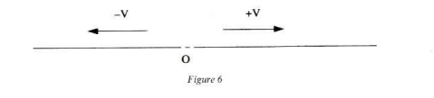
We thus obtain, for each fundamental change, a one-dimensional extension form (Ausdehnungsform):
The concept of simple extension is determined by the idea of the same law for all the moments of the change. Consequently, the simple extension now has the following quality [Beschaffenheit]: if from an element of the sample simple extension results another element through an act of change [Akt der Aenderung], then from results a third element from this simple extension through the same act of change. In ordinary geometry [Raumlehre], the law of equality of direction contains any particular change; in ordinary geometry, it is therefore the segment that corresponds to the simple extension, the infinite straight line corresponds to the total system45
Two ‘fundamental changes’ being assumed as given, their addition (vectorial addition) can be defined in terms of a parallelogram.
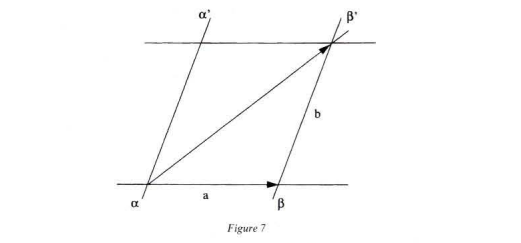
This addition, according to certain hypotheses,46 satisfies the classic rules of arithmetic and, by combining the opposition of the modes of change (the symmetries) with addition, we obtain linear systems. A cluster of fundamental changes being presented, there exists a unique linear system that most closely envelops it (zunachst umfassende System). One can generate systems of step 1, 2, 3 like the plane or space, and even systems of arbitrary step:
If one applies two different laws of change, then the totality of the elements that can be generated form a system of second step. The laws of change, by which the elements of this system can be produced from one another, are dependent on the first two laws; if a third independent law is then added, a system of third step is attained, and so on.
Ordinary geometry [Raumslehre] may again serve as an example. Here, all the elements of a plane are generated from a single element in two directions, the generative element progressing at will in the two directions one after the other, with the totality of the points (elements) so generated forming a plane. The plane is thus the system of a second step: an infinite number of directions that depend on the first two are contained in it. if a third independent direction is added, then the whole of infinite space is generated (as a third-step system) by means of these three directions (laws of change), whereas in pure Ausdehnungslehre the number of directions can grow infinitely.47
Grassmann does emphasize that this indefinite expansion of dimensions is only possible if one can draw at will on an unlimited set of independent directions. This vectorial independence of fundamental changes is manifested by the non-belonging of one of them to the linear system unfolded by the others:
I assume first of all two different fundamental changes and if I protract at will [beliebig fortschreiten] an element of the first fundamental chane (or its opposite) and then protract at will the second element thus changed, following the second manner of change, I will then be able to generate an infinity of new elements, and I call the totality of elements thus generated a system of second step. If, now, I take a third fundamental change … and if I protract at will any element of the system of second step following this third change (or its opposite), then the totality of the elements so generated will form a system of third step; and as this means of generation, in concept, has no limit [Schranke], I will thus be able to achieve systems of any step whatsoever.48
One can thus define systems of any step etc. A system of step (today we would say of dimension ) is defined as possessing independent means of change , so that every element of the system can be written as a sum of elements , respectively related to the systems of step 1 generated by . We know that the philosophers of nature saw a system as an ‘organism’, a hinge that subordinates other hinges to itself in order to put an end to the proliferation of the forms by articulating them.
Thus, the addition balances the indefinite juxtaposition:
There therefore exists a homogeneity that is common to the systems of different step: that which proceeds from additive generation. It is precisely this homogeneity that makes it possible to discern degrees and to speak of step of systems, distinguishing degrees of independence49 from their mode of generation. Each system of step can be conceived as a plateau of equilibrium for the exposition of forms:
This meeting point is therefore an indifference centre where the two free systems proceeding from and the systems which generate are in equilibrium. To take up Grassmann’s expression, the step is the number that is common to the systems that ‘most closely envelop’ (zunachst umfassend) the system . This equilibrium therefore ‘naturally’ distinguishes the step among the degrees of liberty or envelopment, but, as simply distinct degrees, the latter remain formally isolated from one another and assembled together in a single indefinity. A cluster of segments being offered, there exists a single system which most closely envelops it and possesses a determined step, which is none other than this cluster’s degree of independence. But this measurement confines itself to labelling the degrees and remains close to a kind of ‘thermometry’, incapable of spreading them out or registering them indefinitely without ‘base’ or ‘roller’ (see III,4,C).
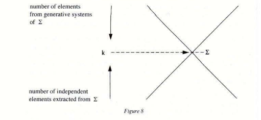
In order to make the coalition of degrees clear, it would be necessary to define an operation that allows the various steps to be crossed; it would be necessary to cut out a more penetrating articulation, throwing the additive systems out of balance. From the point of view of the ‘pure’ operation (that which acts on the terms that are absolutely external to it), these systems are without fissures: it is not ‘formally’ necessary to have present in one’s mind the Kant-Argand balance (see chapter III) to compensate for the positive dilatations. It is sufficient to conceive of zero a the symbol produced by neutralization and not as the centre of a virtual pivot. But we know that for Grassmann the ‘deductive’ does not guarantee the ‘scientific’ [wissenshcaftlich] character (systematization). This systematization could not be confined to merely ensuring that a protocol of liaison between already established forms was respected; it must dare to question the gestures that cut out these forms and sketch new articulations: in short, give a premonition of the geometer’s work (p. 104). Addition undoubtedly makes it possible to define degrees of independence, but by sacrificing zero as an allusive pole, it conquers no intuition capable of arousing a dimension from another. It ‘generates’ only by nourishing itself on fundamental changes delivered free of charge ‘simultaneously and successively’: , then (if is independent of ), then (if is not already in the system ), etc. It cannot live without the help of the formal adjunctions of the etcs and suspension points.
Grassmann says quite rightly that addition is ‘founded’ on the general concept of ‘that which is conceived together’. It is always related to the exhaustion of totalities that are supposed to offer no resistance to being broken into pieces, as the following example shows:
For that, let us look at two magnitudes (forms that result from a single means of generation and that we call magnitudes generated in the same direction); thus ones sees clearly how they can be juxtaposed to form a whole; that is, one thinks of their respective contents together, that is of the parts that the two magnitudes enfold; and this whole is then in turn conceived as a being generated in the same direction as these two magnitudes. It is easy now to show that this liaison is an addition. First of all, I can gather together and permute as I want, because the parts that were conceived of together remain the same, and their succession can change nothing.50
Consider figure 9. I can say of the two circles that they are ‘simply side by side’; the thought act that links them together remains completely disconnected from the act that posits them. I can draw one, then the other, independently: the indexation is totally arbitrary and is simply there to recall that they are two to be ‘thought together’ and that they rest and slide on an indifferent ‘foundation’. Here, the juxtaposition ignores all predisposition. It can be considered as the very diagram of addition with its totally reversible synthesis, its commutativity sanctioning a finished separation and the radical effacement of the hand that drew it. There is therefore nothing to be hoped for from the addition, which is exhausted, if one can speak so, by definition. To renew its association with the virtual, zero must no longer be seen as a ‘neutral element’ that is simply posited, but as a point-vortex, as an instability point, capable of unbalancing the formations ‘generated in the same direction’ and recognized as the centre of the device that allowed the emergence of negative numbers (see chapter III).
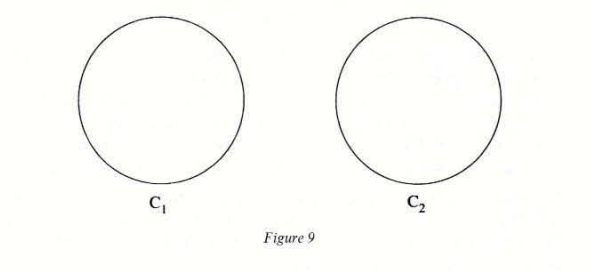
Consider figure 10, which shows how the point zero opens out into two branches, into two symmetrical mobile points.
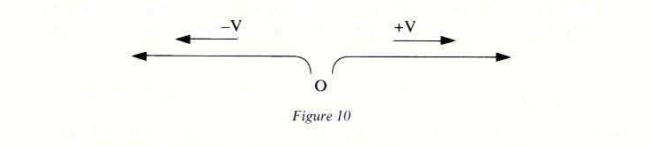
Zero is the point where the first degree of generation is torn apart (that through ‘mobile points’), and it is this which, once again, is going to orchestrate a disequilibrium in order to grasp in a single intuition two points going along a straight line in opposite directions. To master this opposition, we have to decide to see two motions in one, by mobilizing a contour which envelops the folding of the one on the other, and therefore to let oneself be dragged into a second dimension: splitting itself, the mobile point invites another dimension (see chapter III).
The additive generation makes it possible to distinguish degrees of independence without being capable of joining them: it is only at a ‘liaison of the first step’. The jumps between dimension demand a generation and a liaison of second step: multiplication.51
We must now make a detailed examination of the construction of geometrical products: the ‘progressive’ product and the ‘regressive’ product.
The significance of these products extends well beyond the history of mathematics. They represent a valuable example in understanding the new type of geometrical intuition derived from the philosophies of nature of the beginning of the century. We will lay particular emphasis on the following points:
This product fulfils all the criteria of Leibniz, who wanted an algebra that would be able to calculate the relations of spatial positions directly, without recourse to Cartesian coordinates. It was necessary to invent new operations that made it possible to articulate the classic symbols of geometry (point, plane, etc), and therefore to forge a genuine geometrico-algebraic language — a ‘characteristic’ that would grasp extended space dynamically.53
We know that Grassmann associated addition only with the trivial intuitions of the juxtaposition of parts. Before Grassmann, some philosophers of nature had already realized that addition opposes multiplication in the same way that the mechanism’s transitivities and extensive divisions oppose the real dynamism of the natural forces. For Baader, for example:
The world is not a collection of parts, a conglomerate of atoms, but an organic mass governed by a single principle. Totum parte prius: that is to say, the idea of totality is the foundation for the idea of part. If, instead of taking the totality or unity as my starting point, I take the individual (otherwise called that which is conditioned), I will never manage to get back to this totality. Thus we will never achieve the synthesis of an individual as a synthesis if we start from a multiplicity arranged successively. The synthesis must be proposed all at once, like an explosion. Thus there can be no constitution (of an individual) as synthesis of a multiplicity subordinated to a unity, and that may be produced in a successive manner; it must appear in a single act (so to speak, by a revolution or explosion). In other terms, there is no mechanical construction of the body as object occupying space …; and a principle other than the simple mechanism of nature is needed, not only for the constitution of organic bodies, but also for all bodies in general.54
Baader contrasts the external grasps of the mechanism, simple additions and subtractions of parts, with the internal grasps, which are much more penetrating and disturb the understanding by proceeding via multiplication, raising by powers and extraction of roots:
One should not be surprised if the physicist, with his mechanical explanations, his dead arithmetic and his solely mechanical way of juxtaposing, adding and subtracting, cannot manage to compete with nature or the naturalist who constructs dynamically with his dynamic arithmetic: his multiplication and his extraction.
Also, Baader adds in a footnote:
It is a mistake of our mathematical manuals to begin with addition and subtraction, which are dead and devoice of concept, and not with living operations: raising by powers and extraction of roots.
Addition, Baader later adds, ‘merges living forces and their capacity of production with dead materials and their weight, whereas forces which unit or combine do not only add on to one another like pieces of dead matter, but multiply and increasing their powers and, on the other hand, when they separate, not only deduct themselves from one another, but are reduced in the manner of the extraction of roots.’
Ten years before the publication of the Ausdehnungslehre, Baader brought up the real meaning of addition yet again. Most mathematicians wrongly consider, he said, multiplication as a ‘repeated addition’ and division as a ‘repeated subtraction’. Multiplication is a ‘reciprocal penetration of factors’; it produces an ‘interiorization’, an ‘intensification’. Conversely, division produces an ‘exteriorization’. An overt ‘reciprocal penetration of factors’ is what Grassmann is going to demand of his product for it to be a genuine multiplication, an operation productive of plurality. Addition contents itself with being able to ‘think together’ a multitude of preexisting entities by juxtaposing them, in the way that one might pile counters on a table. It resolves scattering only ‘formally’, and the ‘sums’ that it produces are always in danger of teetering over into dissemination: addition produces only the degraded form of the multiple, that which is derived from the decomposition of an already established unit.
Unlike addition, which presupposes no ‘reciprocal penetration of factors’ — the position of the factors is totally indifferent to their liaison — arithmetical multiplication distinguishes a multiplicand and a multiplier: is not arrived at by juxtaposing and , but by assuming one side of the equation as a unit: one says that is the product of and . Numerical multiplication is, of course, ‘commutative’, but, as we will see, synthesis always privileges one side of the equation, which is the operator. It is, as Grassmann said, a ‘liaison of second step’ (see note 1). It is compatible with the possible decompositions (distributivity in relation to addition). It finally makes it possible to conceive a multiplicity that, far from undermining the unity, goes forward into diversity the better to show its unfolding.
Grassmann’s father, ‘by analogy with the arithmetical product’, had already defined a geometrical product:
The rectangle itself is the true geometrical product if multiplication is taken in its purest, most general sense … Multiplication is only a construction of a higher degree. In geometry, the point is the productive element, and the line emerges from it by a construction … The rectangle emerges if we treat the straight line in the same way that we treat the point.
The situation is identical in arithmetic. In this case, the unit is the original productive element. The unit is simply seen as given … If, now, the number is taken as the new base for calculation (by taking it as the new unit) … multiplication does appear as the production of a number of a higher order, a number whose unit is already a number. A rectangle is the geometrical product of its base and height, and this product behaves like the arithmetical product …
In geometry, the point is the element, the synthesis is the motion of a point in some direction, and the result produced by this synthesis, the trajectory of the point, is the line. If, now, the line thus obtained from this first synthesis plays the role of the point and is treated in the same way (that is to say is moved by another direction), it is a surface that is now produced …
It is indeed a question of a genuine geometrical product of two linear factors … If the surface takes the role of a point, we obtain a solid conceived as the product of three factors. We can go no further in geometry, for our space has only three dimensions. No limitation of this kind appears in arithmetic.55
Günther Grassmann, the father, had thus managed to escape the trap of the geometrical addition of the parallelogram of forces: the rectangle, like the other figures of the plane and space, is not a thing that floats in space and ‘supports’ the intuition, but must be conceived as a mobile unit. Such units are constituted as in the diagram of the number (see fig. 4), which succeeds in grasping it at once as cardinal and ordinal. Hermann Grassmann, the son, goes further by seeing that it precisely this ‘reciprocal penetration of factors’ that radically opposes multiplication to addition and that this ‘interknitting’ can be obtained by producing an oriented mobile unit, a ‘circuit’.
The area of the rectangle treats base and height on the same footing; its calculation is of course commutative: and, by reading or , I can acknowledge which acts on which. By deciding to exhibit the order of the syntheses, Grassmann frees himself from the weight of geometrical realism by understanding that this ‘realism’ is the most abstract of all: it forgets the gestures that permitted the construction of the figures.
Grassmann, like Argand, grasped how pregnant the association of the negative and the lateral was for geometry:
It is the consideration of the negatives in geometry that shows me the way. I was in the habit of seeing the distances and as opposed magnitudes. From this observation, one can deduce that if are points on a straight line, then, in all cases, , that remaining true if and are pointed in the same direction or in opposite directions (in the case where is between and ). In this case, and should not be seen as simple lengths, but their directions (which are opposed in the last case) must also be taken into account … By meditating on the concept of geometrical product, following in my father’s footsteps, I came to the conclusion that not only rectangles, but also parallelograms could be seen as the products of two adjacent sides, provided that the sides were not seen simply as lengths, but as oriented magnitudes.56
As the ‘habit of seeing and as opposed magnitudes’ makes it possible to write without reference to spatial intuition, we are going to see that the notion of an oriented parallelogram makes it possible to demonstrate the distributivity relation (see formula (4)). Grassmann adds:
So, when I multiply the sum of two vectors by a third situated in the same plane, the product obtained coincides (and must always coincide) with that obtained by multiplying separately each of the two vectors by the third and then adding (being mindful of the signs) the two products.
Let:
Formula (4) seems crucial, which is why Grassmann wants to illustrate it geometrically, before offering a rigorous definition of the product:
We obtain a higher-step spatial formation from the segment if we make the whole segment, that is to say each point of it, draw a new segment of a different nature, in such a way that all the points construct a single segment. The surface takes the form of a parallelogram [Spatheck].
We will say that two surfaces belonging to the same plane are drawn in an equivalent manner if, during the displacement of the direction of the moved segment in the direction defined by the motion, it is necessary in both cases to turn in the same direction (for example, towards the left in both cases); they will be said to be unequal in the opposite case.
We thus immediately obtain the following law, which is as simple as it is general: if, in the plane, a segment moves successively from any number of segments, then the total surface described (respecting the convention of signs just indicated) is equal to the space obtained by removing the segment from the sum of these segments.
Or: if, in the plane, a segment is moved between two fixed parallel lines, in such a way as to find itself at the beginning of one and at the end of the other, then the total surface so generated is always the same, whatever the path (straight or broken) taken, with the sole condition that the assumed law of signs is maintained.
This theorem follows immediately from the known theorem: parallelograms starting from the same base and rising to the same parallel have the same surface.57
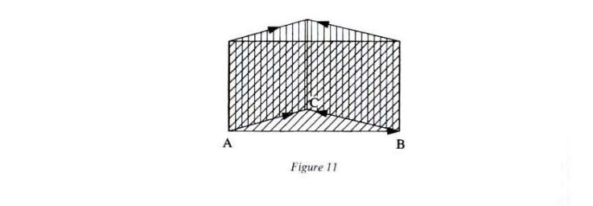
Figure 11 illustrates how, by a compensatory phenomenon analogous to that which makes it possible to demonstrate that , even in the case where is outside the segment , the surface area described in the plane by a broken line is equal to that described by the straight line that has the same initial and final points as it. The distributivity formula (4) thus remains valid and the ‘miracle’ of the algebraic addition of the pieces of oriented trajectories is extended to the second-step mobile units. The multiplication in the sense of the general theory of forms and satisfies a Chasles two-dimensional theorem (see below):
According to the concepts developed in the general theory of forms, from the theorems of this paragraph and the preceding one it follows that the liaison of the two segments and , of which the result is the surface that is generated when the first segment is displaced from the second, is a multiplicative liaison: because, as is immediately apparent, this relation to addition that makes it a multiplication is valid for the liaison.58
If the liaison sign is chosen to designate this type of liaison and if the moved segment is given first, we have:
We see how important the introduction of oriented surfaces is: since the pans of Argand’s balance took the opposite view to accumulation and iteration, they open a dimension and keep the geometer from becoming overwhelmed by the datum of the already extended surfaces. The comparison of the areas and the law of distributivity which is deduced from it therefore exactly reproduce the relation between algebraic magnitudes which had inspired Grassmann: .
It is important to analyse the power of mobilization linked with oriented magnitudes. It is well known that when three points, are aligned, the relation between distances is not always true. The manner in which the three points are distributed is imposed on me: I grasp no relationship between the different positions. There is no liaison between the statement ‘’ and one of the images of the three points facing me: no line or relationship is either prescribed or suggested by the statement. All I have there is simply three points distributed on a straight line and I confine myself to exhausting their collection and to adding up the distances: they are appreciated by a third party who is indifferent to the positional relationship, for whom nothing is at play between , , and — this is the point of view of the surveyor who carefully juxtaposes already frozen bits of extension.
Quite other is the view that considers the points , , and as places visited by a mobile point ; they then appear like the stopping points of the same motion. By stating , then , then , or in defining the notation of the circuit , I accompany the mobile point in thought and ‘’ conquers an intuition: that of a point that ‘goes’ from to , then from to . are explicitly linked together and the statement’s successivity is exactly that of the visits: does not refer to a distance measured by an extended their party, but to a journey made from to . This journey could be that of the geometer’s eyes metamorphosed into a mobile point and yet capable of keeping the totality of the journey before his mind. The relation asserts nothing more than the continuity of a look and the possibility, finally offered literally, of grasping mobile points.
A mobile point generates diversity; are not simple states distributed on the straight line: their diversity is an integral part of a single process of becoming. As the introduction demanded, the distinction of these points is a distinction become a ‘dissolved combination’.
It is evident that it is quite easy to cancel the journey in thought by inventing the notations and and to see that the transit of opposes the transit of towards . Successivity in time seems to imitate precisely spatial coexistence. This is the intuition of the trajectory: a ‘moving’ in a strict subordination to a clock. This is why the notation so successfully suggests a journey: the spatial and the literal are perfectly merged in it.
Cancelling the intuition of a parallelogram is considerably more delicate: it is not very clear how to endow it with mobility. Grassmann borrows Möbius’ idea of the oriented parallelogram. The notations and refer respectively to the positional relationships and circuits drawn in figures 13a and 13b:
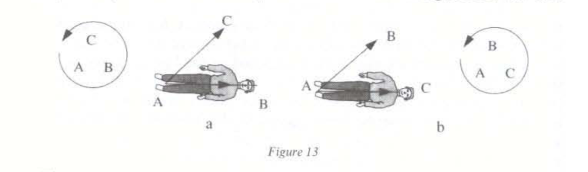
These are the ones evoked by Grassmann in his definition of the product. This notation assumes a noetic propulsion that is much subtler than that of the transit where ‘I saw myself going from towards ’. In the case of figure 13, ‘I lie down on (feet at and head at ) and I see to my right.’ A single notation ‘’ is capable of staging all these actions (lying down, seeing) and of associating a circuit in the plane with them.
The oriented volume is defined in the same way; an observer ‘lying on (feet at ) sees on his right and towards the top’.
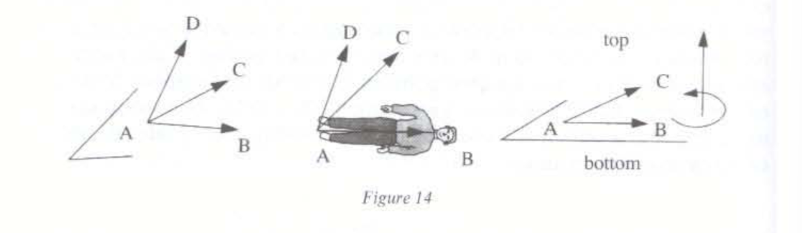
We have escaped the trap of the transitivity of trajectories. The latter relied too soon on the identification of the literal and the spatial. They solicited only the contemplation of an looking towards . Here, it is the whole body that appropriates a space. By insisting on the order of the letters, the notation or captures my manner of contemplation by specifying a mode of articulation of the mobilities. An oriented volume or, better, an oriented amplitude does not sanction an established extension, an ‘overcrowding’ of space, but rather a circuit or a virtual envelopment. The stated order and the circuit are indispensable: () is a simple aggregate of letters, whereas ‘’ sanctions a seizure of space that is much more concrete than the magnitude.
The oriented envelope also makes it possible to distinguish and to cut out sides’. In the construction of the second-step extension, this is what makes it possible to choose ‘from what side’ the motion that conquers is made to sweep over a parallelogram. In the case of figure 15, the motion must be made from the side that will give a circuit in the same direction as the enveloping motion represented by the plus encircled by an arrow. Given a canonical circuit and an oriented base, one can consider the segment — the ‘height’ —, which directs the motion, as that which articulates and envelopes the oriented base: Grassmann’s generation and multiplication take up Oresme’s mobile unit again by injecting it with the dynamic of the orientation.
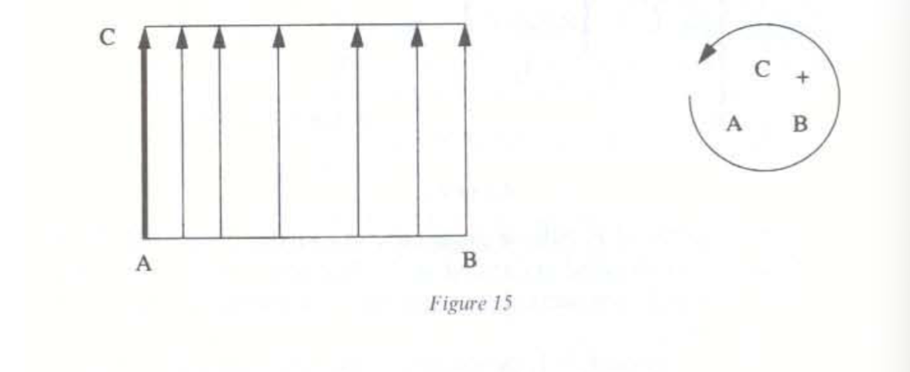
Grassmann then gives a clearer definition of the form of the geometrical product by stressing the distinction between that which is moved and that which moves:
Further development now demands the generation of new types of extension. The manner of this generation is an immediate result, by analogy, of the manner in which the first-step extension was generated from the element, by now subjecting in the same way all the elements of a segment to another generation; it be more specific, the simplicity of the magnitude that is going to be generated demands equality in the manner of generating all the elements, that is to say all the elements of this segment describe a single segment . The segment is presented here as that which generates the other segment as the measurement of the generation, and the result of the generation is, if and are means of different generation, a part of the second-step system, determined by and , which must then be understood as second-step extension [Ausdehnung zweiter Stufe] …
For the moment, that is to say until we have determined more particularly the nature of this liaison, we designate the resulting product of and by , and for the moment by , where and are the segments, we mean the extension which is generated if each element of generates the segment .59
Grassmann’s mobile unit therefore combines the orientation and the intensive/extensive dialectic analysed earlier (see p. 112 and following). We can offer a diagrammatic interpretation of this product. Let us link up the diagrams of the dispersed segment and of the applied force (see above, fig. 3), thus showing the extension formation , produced in this order (from by ) as in figure 16.
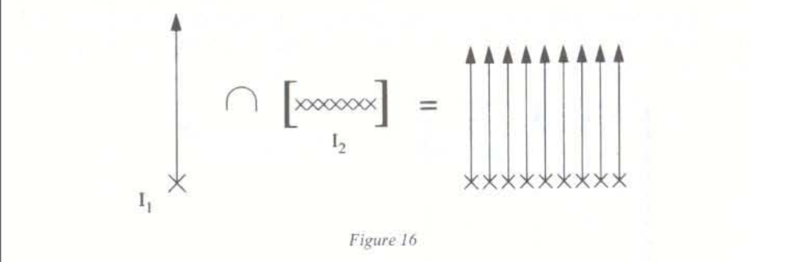
I animate each point of (whose points are essentially dispersed) through the pure displacement directed according to . The first — intensive — term is presented as that which conducts the generation and the second term as the base of the generation.
The extensive formation permutes the roles of and : becomes intensive and extensive.
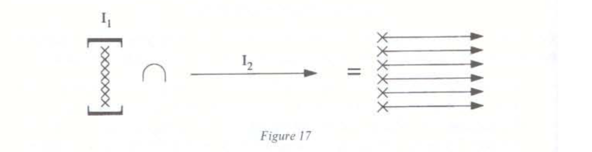
We see that this distinction in the order of statement, then or then , precisely reproduces the two decisions possible for streaking the rectangle vertically or horizontally: the two modes of ‘fibration’ of the spread-out rectangle are therefore exactly grasped by the notations or . These notations reinforce the distinction between the agent that generates (the ‘multiplier’) and the patient that nourishes the generation (the ‘multiplicand’), by demanding that the order of formation of the products be carefully specified: is obtained by displacement of the points of the first segment (the ‘base’) by the action of the second (the ‘height’). This product is not available as a thing given extension there, in space: it is not a Raumlehre figure. The order of the symbols leads the hand and prescribes an actual construction of the ‘figure’.
A ‘geometrical word’ (respectively ) is coined, revealing a dynamics of the rectangle. The points of segment (respectively ), whose extension is already established, are set in motion by the unfolding of the segment-intensity (respectively ). The segments participate in a relationship that intersects them, whereas juxtaposition contents itself with merely ‘thinking together’ two elements that remain strangers to one another: ‘’ is not really a ‘word’. Here, the hand is implicated in the product; it coordinates a successivity and a side-by-side; it brings about the new dimension by embodying an orientation; thanks to the geometrical product, the plane takes possession of a mobility that seemed reserved for vectors.
Grassmann acknowledges his perplexity before this strange multiplication:
At first I was very disconcerted by this strange result: the other laws of ordinary multiplication were all respected by this new multiplication (in particular the relationship of multiplication to addition) … But any permutation of the order of the factors entailed a change of sign … 60
He stresses this crucial association of the crossing from left to right (and vice versa) with the change of sign:
The surface of the parallelogram is thus presented again as the external product of two segments, and the volume of the parallelepiped is presented in the same way as the external product of three segments. These two first segments then make up the sides of the parallelogram and the three others the ridges of a parallelepiped. To be more specific, we took the segment whose motion formed the parallelogram as the first factor and the segment which measured the motion as the second, with the result of what we call two equal parallelograms if, seen from the first factor, the second one is on the same side, and the result of what we call two inverse parallelograms if they are on the opposite side.
From this Grassmann derives the rule:
‘for’, he says, ‘if , seen from , is on the left, then , seen from , must be on the right, and vice versa.’
This is the particular form of a general law of signs which Grassmann proposes to deduce geometrically:
It is clear from the concept of the negative that if the base and the height of a parallelogram keep the same directions, the surface preserves its sign, even if its sides increase or decrease. If, moreover, the extremity of the height displaces itself onto a line parallel to the base, while the latter remains the same, then the surface stays unchanged; it therefore preserves its sign. We begin from these two hypotheses to give the geometrical justification of the general law of signs.
… All parallelograms whose heights seen from the base remain on the same side must keep their sign. In altogether analogous fashion, if we distinguish here the first, second and third ridge, we will be able to establish for parallelepipeds [Spath] the law: the volumes of two parallelepipeds preserve or change their signs, according to whether one must turn to the same side or to a different side to pass from the direction of the second ridge to that of the third ridge, if an observer is imagined lying on the first ridge (feet at the origin and head at the extremity).61
The rule (6) can be proved by other means. Following the preceding constructions, we have to associate with a parallelogram of zero area since is at once what is moved and what moves. It is thus easy 62 to see that the relation , joined to the property of distributivity (5), also gives: . The external product sanctions only the actual acquisition of extension that makes ‘the factors move apart,’ as Grassmann himself says:
I previously63 called this product … an external product, alluding by this name to the fact that this kind of product only has a non-nil value if the factors move apart and if the product then constitutes a further extension. This product is, on the other hand, equal to zero if the factors belong to the same extension form.64
The process can now be extended to the construction of the parallelepiped of step , the latter being understood as the progressive product of points. This is Grassmann’s crucial idea: to have found the liaison that makes it possible to leap from one dimension to another.65
The ‘external’ or ‘progressive’66 product can be defined for any system of step with which an oriented volume has been associated. This oriented volume,67 called the principal measure by Grassmann, makes a positive or negative number correspond to the datum of segments taken in this order and denoted . This principal measure is, one might say, a sequence of letters made mobile; it fixes one of the two ways of enveloping virtually a parallelepiped beginning with segments. This product combines mobile syntheses analogous to that of figure 17, as Grassmann quickly emphasizes:
We now extend this definition to any number of terms and for the moment we intend by … (where are any number of segments) the extension that is formed when each element of generates the segment , each of the elements so obtained then generating the segment , etc.68
The construction of this product, which Grassmann then describes in detail, would go beyond the frame of our analysis. We will confine ourselves to recalling the essential features.
Let be a system of step assumed to be endowed with a principal measure (oriented volume with oriented amplitude) denoted . It is then possible to define a product (‘progressive’ or ‘exterior’) such that:
This multiplication therefore makes it possible to propel oneself from one step to another: this justifies the designation of external or progressive product. Thus, in a system of step 3:
It is interesting to examine in detail the ‘movement’ from one step to another permitted by multiplication. We will be able to observe how the oriented envelope makes it possible to direct the chain of syntheses and the mobilizations related to them. The movement from step to step should not be understood as the formal adjunction of a vector to a given system: the adjunction simply makes it possible to ‘think together’ a segment and a system of vectors , whereas the volume, the oriented amplitude is not content simply with putting together with but first envelops them, to decompose itself afterwards as . Let’s assume the product , which induces an oriented volume for the system (of dimension ). If an oriented envelope of order is given, it defines two ‘sides’ in the system , ‘separated’ by (see fig. 18 for ).
The side from which the system is ‘seen’ in the positive direction is opposed to that from which the system is seen in the negative direction. This ‘seeing from outside’ is now given by the oriented envelope of order . There exist two classes of segments.
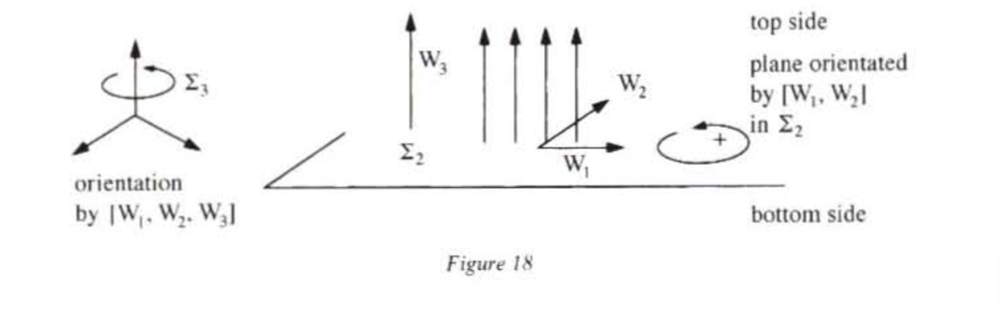
We see that the oriented envelopment precedes the actual construction of the extension forms of order ‘beginning from’ that of order .
The notation of the oriented volume is a sudden possession: it permits the compression of a whole scenario. With the oriented volume understood as product, the geometer propels an invisible body which has complete freedom to contemplate from the outside the circuits contained in the horizontal planes defined by this body. The formula of the product permits a decomposition of this sudden possession and articulates it with the already established extension forms.
In order to define numerical multiplication, it was sufficient to consider a number as a unit and to take it as a new base for calculation. With Grassmann’s product, we grasp an oriented unit and we complete it on a particular side in order to reach the already given oriented envelope. It is therefore by provoking an ambiguous state of affairs which is then dissipated by an orientation that a dimension can be conquered. Oriented volumes ‘allow us to see two volumes in one’. The extension is aroused by splitting, and that is why, as we shall now see, a dimension posited as mobile alludes to another.
By linking multiplication and orientation, Grassmann strikes a double blow:
This is therefore a device for articulating degrees of independence. Thus the compensation of spatial intuition of arbitrary degree is finally allowed, which quite obviously, arithmetical multiplication could not do. The radical overthrow brought about by Grassmann’s product involves three key points:
How does a dimension allude to the conquest of a supplementary dimension? We know how Grassmann, in combining the dilatations and reflections of the modes of change, obtains a system of step ‘beginning from’ fundamental modes of generation. But dilatation and opposition never allow the possibility of jumping from one dimension to another; I shall thus never be able to ‘deduce formally’ the plane beginning from a straight line!
A line can be travelled in one direction or in the other at a velocity , but if I want to grasp the two motions in a single intuition, I must ‘stand back’; I cannot content myself with exchanging and by reflection, I must construct a unit that grasps the two mobiles at the same time. ’Crossing from to by reflection leaves me defenseless when faced with transit; this evasion cannot allow me to picture myself in the act of contemplating and at once. I must therefore deform the mobile point into the mobile point , and not shift from to . This deformation necessarily invites another dimension; I can, for example, fold back on (see fig. 19).
We are in a position of exposition and zero appears as a pivot. Here we experience again the magic of articulation, which makes it obvious that such-and-such an opposition is mastered in a wider continuum; here, when I link the two mobile points on a straight line, I am already positioned in a plane.
In an identical manner, if I consider two circuits of opposite direction in a plane (see fig. 20) and if I require to grasp them in a single intuition, I immediately position myself in a ‘space’. This seesawing involves all steps: a system of step being established, there exist two types of oriented volume69 linked with this step (these are external products of segments) and, by deforming the one into the other by thought to grasp them in a single intuition which is not an arbitrary juxtaposition but an articulation, I position myself in the next dimension.
It is necessary to emphasize that:
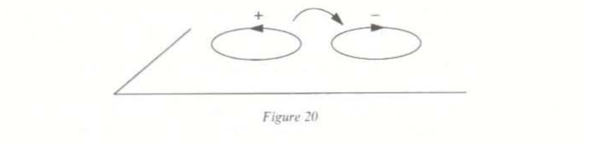
These deformations imply the invention of a superior homogenization. The theory of the extension set out to master the birth of the continuously diverse. This diversity must not be taken as that of blocs dispersed in the extension, but constitutes a system: a consistent deformation must produce it. This ambiguity therefore demands the most resolute of noetic propulsions and the one that is most orthogonal to transitivities and extols most highly the gesture that cuts out and unfolds the form. The dialectic of the mobile point succeeded in overcoming the opposition between the static point and the diversity of places. Dialectical generation demonstrates its power of reactivation by inventing a superior mobile unit: in the same way that Argand’s balance compensated for iterative intuitions with his negative arm and alluded to the straight line of the imaginaries, the parallelogram or the tetrahedron split themselves into two possible deformations.
Two circuits must be sketched in dotted lines and are not added on to the figure like excrescences or prolongations. They arouse extension through splitting. Two triangles given as equal solicit only a superposition executed in the plane: they invite no supplementary dimension. The latter becomes necessary if I decide to see two triangles as equal as figures, but opposed as circuits (as a way of enveloping the domain). By deforming these circuits into one another virtually, I position myself in another dimension which allows me to contemplate them actively and to opt for one of them without being rendered powerless by the irreducible fact of the right hand and the left hand.
Endowed with their oriented volumes, the systems of different steps can therefore unfold themselves into a double series (see fig. 21).
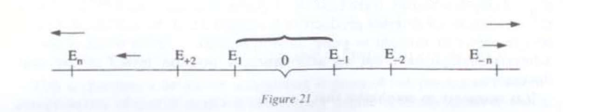
The different brackets are linked to a single system of step , split into two classes of oriented volumes. The diagram recalls that of Eschenmayer (see III,4). Each step defines an equilibrium plateau and marks a pause where only the first degree of generation is at work: that which unfolds a system beginning from a cluster of segments by combining additions and oppositions. Then comes the second degree of generation: the equilibrium of degree (a system of step ) can be broken if one draws a device implying a more ample continuum: one must be positioned in the following dimension to deform two opposed volumes into one another. We see therefore the dynamic principle that underlies the capture of the extension: the generation that does indeed accompany a balance of Being.
External multiplication is therefore the form that cuts out this ‘second degree’ of generation precisely: it remains indifferent to the forms that have already been acquired by addition and the products of dependent or opposed factors are equal to zero.
The progressive product certainly makes it possible to ‘cross’ from to , but this ‘crossing’ must above all not be understood as that of a continuous expansion or dilatation. The dimension does not run out peacefully from a point-source (the ‘origin’) to an extension form of step (an oriented volume of order ): to position oneself in a system of step , with an oriented base already established, an ambiguity has to be cleared up between two families of deformations. The ambiguity associated with the orientation forces the most irreversible of decisions and guarantees that the leaps of intuition, which lead from step to step, do not degenerate into progressive, self-evident filling, plain ‘augmentation’. The dimension must be earned and is acquired by stages, but each stage is a test and the decision that it involves cannot ignore the oriented envelope that captures space before any filling takes place.
We get an idea of the ‘vertical’ power of Grassmann’s oriented multiplication. The additive ‘horizontal’ form can only capture the intuition of the ‘thinking together’; the multiplicative oriented form grasps the virtual invitation of a dimension, the ambiguity induced by the mobilities that travel across those that have already been posited. It guarantees that the dimensions are not reduced to a simple sequence of steps, an abstract ordinal series of degrees of independence, labelling the systems like marks on a thermometer with no internal connection between them.
We know that each dimension can in principle be distinguished by a principle of selection, but they are then detachable like isolable samples. Such degrees invite a rectification device capable of spreading them out whilst adding them up (see chapter III). Grassmann’s product plays this role by unfolding the degrees of independence, as is shown by the formula ’if , and being of step and , then is of step and “most closely envelops” the joining together of the forms and .
The oriented multiplication articulates the degrees with one another and figure 22 suggests that the envelope plays the role of a horizon opposite to the point-source origin. In fact, we know that the horizon cannot be reached by iterating additions, that it never results from a ‘thinking together’ that is already given (it is rather the condition of such a gathering). It does, however, prescribe stratifications, horizontal bands that are homogeneous with each other. Here it is the invisible hand — the oriented envelope — that guides the same gesture (the ‘crossing’ from the oriented base of order to the envelope of order ) and makes possible the conquest of linear systems of arbitrary dimension.
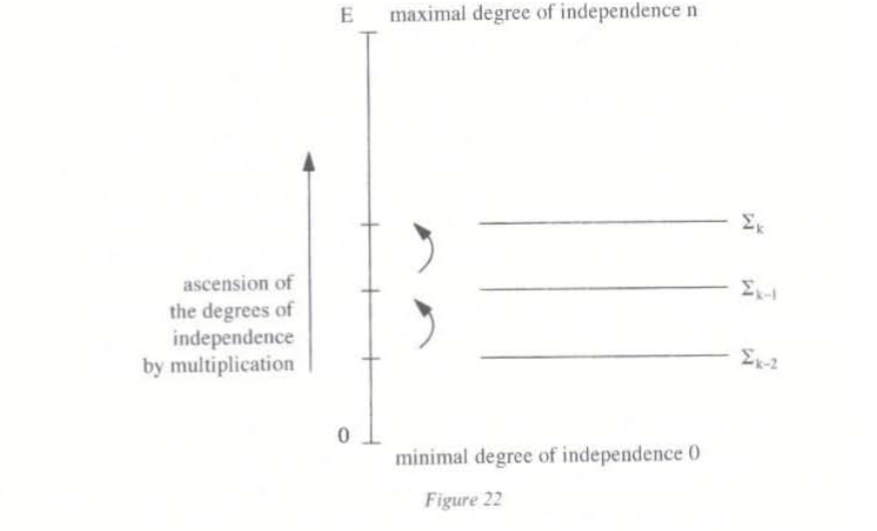
With the progressive product, the geometer makes himself master of all possible dimensions: he explains space (the product grasps and ‘most closely envelops’ the extension derived from the reunion of the extension forms and ). Grassmann’s penetration allowed him to sense that this naive prioritizing of the expansion, based on the degrees of independence, had to be balanced out by a symmetrical process: a multiplication that would show the spatial contraction and reply to the question: what form would envelop only that which is common to two systems and ?
Grassmann therefore defines a regressive product that envelops the intersection in the way that the progressive product enveloped the union. We have just seen that the oriented envelope worked like a horizon starting from a point-origin. Grassmann brilliantly sensed the necessity of balancing this situation: must now be seen as a horizon starting from , and that through a symmetry that no longer switches over the figures of space but involves the very dynamic of thought.
Grassmann possesses a very sure dialectical sense: any notion, any intuition, any motion of the mind must be mastered and balanced by a symmetrical device. In the tradition of the philosophy of nature and the balancer of Being, it is the geometer’s duty to control the proliferation of forms by distinguishing the metamorphosis of the generation and demonstrating it in the form. After the dialectic of the mobile point and that of the deformations of opposed volumes which made the rise through the dimensions possible, a new stage asserts the regressive product that allows the descent from the system of step as far as the point. The same concern for symmetry is behind the inclination to articulate the degrees of dependence in the way that the degrees of independence were articulated.
Grassmann explains:
The concept associated with an external product was that each piece of a factor, dependent on the other factor, could be ignored without changing the value of the product (which implied that the product of two dependent magnitudes is zero). Real magnitudes, that is to say those that can be represented as products containing only single factors, were then said to be ‘independent of one another’, if each factor of the latter was completely outside the system determined by the remaining factors … Since this determination that makes a product into an external product is now not part of the concept of the product as such, it must then be possible to keep the general concept of the product and yet abandon this determination or replace it with another; to find this new determination, we must (since, according to it, the product of two dependent magnitudes must also be able to have a non-zero value) examine the different degrees of dependence.70
The external product ‘erased’ the dependence of the factors; the regressive product, conversely, seeks to measure it alone. It is not a question here of giving a detailed construction of this product, but of suggesting a sufficiently precise notion of it that shows how it balances out the progressivity of the external product in the intuition (see fig. 23).
is a magnitude of step , is a magnitude of step , and if , , it is natural to think that the step of (which is the largest factor common to and ) measures the degree of dependence. Except for this sign, will in this particular case be the regressive product of and in each system endowed with its oriented envelope. one can thus give a more general definition of a regressive product related to two extension forms of steps and (such that ) and ; this product is an extension form which envelops the systems common to and and denoted .71
Let’s give some examples.
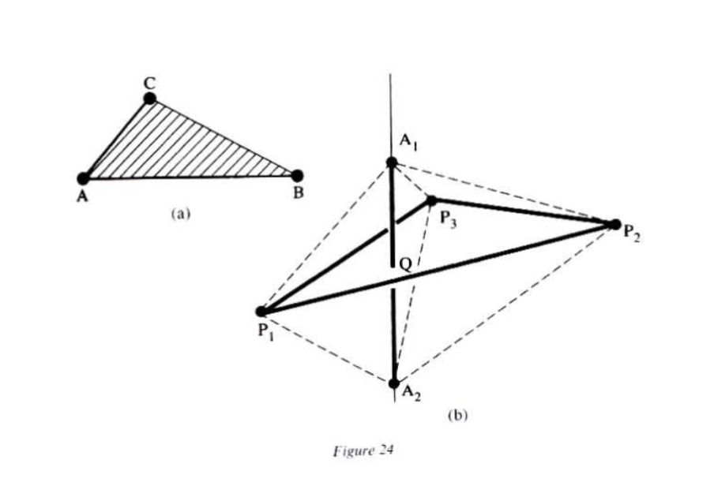
the intersection of the two segments and is indeed the point to which the number is attached here.
(c) If (respectively ) is the plane determined by the triangle (respectively ), we will have equally (see fig. 24c):
The intersection of the planes carrying the triangles and is the straight line carrying the combination of segments of the right-hand side of the equation. This last example makes it possible to grasp the central idea of the construction.
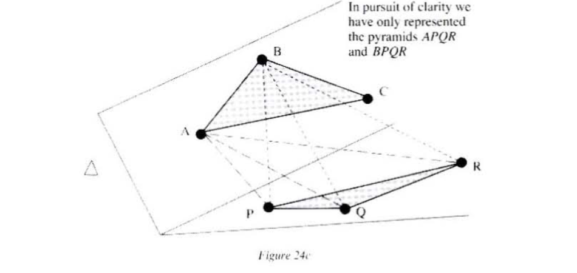
Two extension forms are chosen: here, two triangles and ,. One of the two is preserved and the other is broken into pieces in such a way as to obtain an oriented volume (here, a tetrahedron), and therefore a number (positive or negative) that is multiplied with the remaining piece of oriented magnitude. Thus, by preserving the triangle and breaking into three pieces (the segments , , and ), leaving a point each time on the side (respectively , , and ). I obtain the numbers , , to be multiplied by the segments , and .
We must not forget that is not a single piece of extension but a circuit (one state first, , then , then ) and that there are three ways of subtracting a point from the circuit .
If were only a simple piece, by removing a point, we would be able to identify the residual piece without any ambiguity. Here, I obtain a circuit by mutilating another circuit. By taking away , I obtain two possible segments. The ambiguity is dispelled if I demand that the chosen circuit permit the reconstitution of the initial circuit by composing it in the classical manner (on the left) with the circuit (here a point) which has been removed.
Examples. Let the circuit be . Having suppressed , we must choose , for compounded with (on the left) gives . If we now suppress , we must connect up the circuit , since (rule of signs).
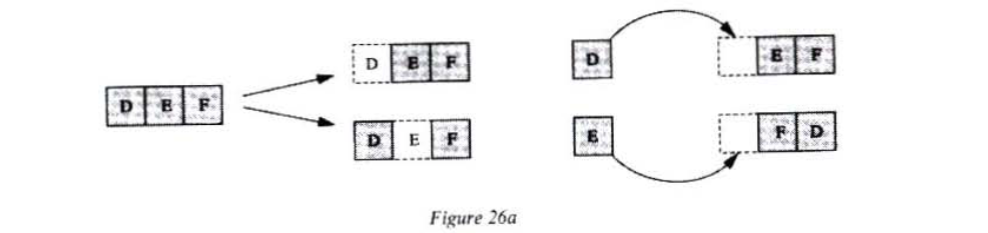
Take the circuit . It we removed , is ‘left’, since is immediately reconstituted by juxtaposition on the left, without the need to step over any letters (see fig. 26b).
This is no longer the case if I cut out the circuit , since to reconstitute from and , I must switch over and . the oriented residue will therefore be $.
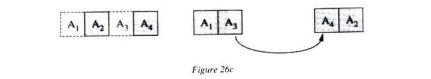
We can verify that .
We now understand better the rule that fixes the correct oriented residue: it is necessary to understand the missing places as resulting from the transgression of a relation of position, from the mutilation of a whole. The oriented residue specifies the minimal series of gestures that would make it possible to reconstitute this whole. Once more it is a question of showing the articulation of the position and the enunciation. By simply writing , I merely index the components of an aggregate without regard to the position. I have however had to enunciate successively , then then , etc., as far as , but this successivity was totally arbitrary and attempted to grasp no relation of position.
The separation between extended aggregate and circuit is therefore all the clearer. The oriented residues emphasize the contrast that opposes circuits and extended aggregates: if one circuit is extracted from another, the residue circuit must carry the scar of this mutilation, whereas in an aggregate (an extended totality) a part and its complement (what remains when has been incised) are put on the same footing and in a relation of indifferent juxtaposition. Grassmann’s products capture mobilities: these are circuits where places and their enunciations intertwine.
The oriented residues appear therefore as oriented complements. Given a system of step and an oriented volume, the oriented complement of a circuit will be defined unequivocally. The oriented volume (the manner of enveloping) again plays a crucial role here: its insistent presence is similar to what indirectly conditions certain gestures, like a horizon (see chapter II); it destroys in advance any effort attempting to reduce the mobilization of the extensive to a modest step-by-step. This ‘modesty’ of the step-by-step is merely the camouflage of a philosophy enslaved to transitivities, clinging to its finitude and incapable of conceiving a horizon.
The oriented complement possesses a remarkable quality: the operation switches the liaisons and and induces a correspondence that exactly balances the diagrams in figure 23. We have in effect and for two extension forms and .73, which transforms the ascent of the degrees of independence into a descent of the degrees of dependence, and vice versa (see fig. 27).
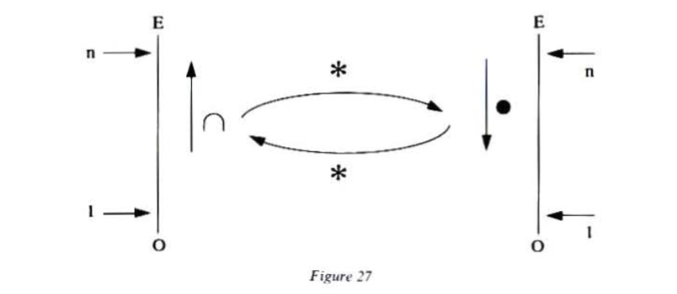
By arranging the liaisons and like two symmetrical wings of a single motion of thought, the operation emerges as the keystone of a magnificent edifice.
We know that Grassmann had recognized that certain notations can be fertile thought experiments: as can be ‘seen’ as the opposite of , two opposed circuits attend the reading of or . Grassmann therefore set geometry free from the servitude of spatial intuition and algebra from the blind transitivity of formulae at the same time. The Ausdehnungslehre is thus at once ‘analytic’ and ‘synthetic’; the dead icons that the points, straight lines, etc had become are replaced by units of active contemplation, which are present in the very motion of grasping the extension.
There is no longer any possibility of having recourse, like Descartes and his successors, to a witness marker that provides the coordinates necessary to create an algebraic text — the equations of the geometrical places — in its position of a commentator and guarantor of the ‘context’ of the spatial intuitions from which it remains detached. This text naturally retains very few traces of the construction of the curves that it ‘represents’: the reading of its formulae, which condense relations between magnitudes and powers of magnitudes, says nothing directly of the lines drawn and journeys effected, at least in thought, by the geometer. Grassmann’s language overturns all that: the ‘words’ fabricated like products of letter-points articulated by the multiplications and may be produced in the very rhythm of the statement of a problem. What one could call Grassmann’s dynamic ideography shows itself particularly apt to study the curves associated with constructions said to be ‘lineal’ (effected by intersections of straight lines and liaisons of points as segments).
Also, a theorem of the type, ‘If the sides of a triangle turn around three fixed points , , , while two vertices move along two fixed straight lines, the third vertex describes a conical section’,74 can be instantaneously demonstrated by setting some ‘word’ to zero.
It is the non-commutative that permits this miracle by knitting together an enunciation and a positional relation. The non-commutative does not claim to grasp parts of space by labelling them with letters or figures (this is a plane, this designates a straight line, etc.) but arouses the spatial by making up algebraic miniatures of motion. Of course, the importance of the order of the terms in a formula has long been recognized: care would have been taken not to confuse with . In this example, the distinction simply results from respecting a rule of calculation; the difference between and is acknowledge and submitted to by the mathematician. This difference asserts itself irreversibly with the two flows of the enunciation. No intuition accompanies the distinction of these two flows: by respecting the order of the writing, the geometer is simply instructed of the difference of the results just as the telegraphist deciphers a message word for word. In this example, the analyst bows before the successivity as the ordinary geometer (he of the Raumlehre) lets himself be subjugated by the magnitudes of the paralysed coextensions of things.
Naturally, one can take pleasure in endlessly complicating the example of the functions and . Such compositions accumulate different values by desperately mimicking the irreversible character of vulgar temporality, just as the ordinary geometer only knows how to note the fact of the dispersion. The non-commutative suspends this temporality and assumes this dispersion by playing on the order of the letters to produce this or that circuit virtually. By linking the free-style dance of the letters to a continuum where circuits can deform one another, the geometer gains kinetic formulae; he escapes the slavery of the transitive and spatial of all figures and motions (‘such a thing turns in such a direction’) which might attempt to impose themselves opposite him like a fact of nature.
Grassmann showed us how the simple opposition of and could generate sides; his split and mobile spaths know how to make the most of the ambiguity of the non-commutative: to grasp at last what irremediably escaped addition, what cannot lightly be ‘thought together’ or ‘the one after the other’, what gives itself irreducibly as a process, as a node in space-time.
This is what is at stake in electrophilosophy, which we tackle in the chapter that follows: to split or develop a space by articulating the successive and the lateral, to see that the translation can be the visible trace of an invisible rotation and dissolve the Newtonian cliché.
Hermann Günther Grassmann, born at Stettin (Pomerania) in 1809 and died in the same town in 1877, received a very careful education from his parents. His father, Günther Grassmann, was a teacher of mathematics and physics at the Stettin Gymnasium; very much taken up with educational matters, he wrote several elementary books on mathematics and physics, certain of which would directly inspire the works of the geometer (see Raumlehre, ebene Raumlehre, Grossenlehre). After attending Friedrich Schleiermacher’s theological classes (see A.C. Lewis, ‘Grassmann’s 1844 Ausdehnunslehre and Schleiermarcher’s Dialektik’) and studying the classical humanities and modern literature. Grassmann decided to give himself a solid education in mathematics and physics, researching them outside academic circles. This idiosyncratic relationship with knowledge gives the measure of the man, who takes his place in the tradition of the great amateurs of the nineteenth century: independent, encyclopaedic, self-taught. His works are concerned with the theory of electricity (see ’Neue Theorie der Elektrodynamik’), physiology, as well as linguistic and the history of languages, studies of Sanskrit, and, naturally, mathematics. It might be useful to offer a summary bibliography of, and on, the work of H.G. Grassmann: (a) H.G. Grassmann, Die lineale Ausdehnungshlehre, ein neuer Zweig der Mathematik, dargestellt und durch Anwendungen auf die ubrigen Zweige der Mathematik, wie auch auf die Statik, mechanik, die Lehre vom Magnetismus und die Krystallonomie arlautert (Leipzig: Verlag von Otto Wigant, 1844), reprinted 1878 (= Gesammelte mathematische unde physikalische Werke I-1, pp. 1-319). (b) H.G. Grassmann, ‘Neue Theorie der Elektrodynamik’, Annalen der Physik und Chemie. Poggendorff, 64, 1845, pp. 1-18. (c) H.G. Grassmann, Die geometrische Analyse geknüpft an die von Leibniz erfundene geometrische Characteristik, Leipzig, 1847 (= Gesammelte mathematische unde physikalische Werke, I-1, pp. 320-98). (d) H.G. Grassmann, ‘Sur les differents genres de multiplication’, Journal für die reine und angewandte Mathematik, Crelle, 1855, 44 pp. 123-41. (e) H.G. Grassmann, Die Ausdehnunslehre. Vollstandig und in strenger Form hearbeitet, Berlin 1862 (= Gesammelte mathematische und physikalische Werke I-2. pp. 1-379). (f) H.G. Grassmann, Gesammelte mathematische und physikalische Werke (Leipzig, 1894-1911), 3 vols. (g) J.G. Grassmann, Raumlehre ebene Raumlehre, Grossenlehre (Berling, 1824). (h) A.C. Lewis, ‘Grassmann’s 1844 Ausdehnungslehre and Schleiermacher’s Dialektik. Science. 1977. 34. pp. 103-62. (i) On Grassmann and the Leibnizian tradition, see H.G. Grassmann, Die geometrisch Analyse geknuft an die von Leibniz erfundene geometrische Characteristik and M. Otte, ’The Ideas of Hermann Grassmann in the Context of the Mathematical and Philosophical Tradition since Leibniz’ Historia Mathematica, 1989, 16, pp. 1-35. On the introduction, see A.C. Lewis, ‘Grassmann’s 1844 Ausdehnungslehre and Schleiermacher’s Dialektik and D. Flament, ’La Die lineale Ausdehnunslehre (1844) de H.G. Grassmann’. Lecture Notes in Physics, 1992, 402. (j) For different accounts of Grassmann’s theory, see G. Peano, Calcolo geometrico secondo l’ ‘Ausdehnungslehre’ di H. Grassmann (Paris: Gauthier-Vaillars, 1897). See also the remarkable article by Rota et al. ’On the Exterior Calculus of Invariant Theory, Journal of Algebra*, 1985, 96, pp. 120-60.’↩
F. Klein, Vorlesungen über die Entwicklung der Mathematik im 19 Jahrhundert (Springer 1979) 180-81.↩
See III, p. 100, n. 27.↩
M. Merleu-Ponty, Resumes de cours (Paris: Gallimard, 1990). 91.↩
Hegel, Science de la logique L’Etre I. 2, 1, A, 1, p. 171.↩
Schelling, Rescherches philosophiques sur la nature de la liberte humaine, Essais, p. 226.↩
On the question of product and productivity, see ‘Introduction a la premiere esquisse d’un systeme de la philosophie de la nature’ (ibid., p. 374): ’There must exist in nature something that is absolutely unobjective. Now, this absolute unobjective is nature’s original productivity. According to contemporary opinion, it is eclipsed behind the product: according to the philosophical way of seeing, on the contrary, it is the product that is eclipsed behind the productivity (our italics).↩
H.G. Grassmann, Die lineale Ausdehnungslehre, introduction, p. 31.↩
Ibid., p. 32.↩
Ibid. § 13, 14, p. 30.↩
Unlike a sensible intuition which appears to receive its object, an intellectual intuition partakes of a form of knowledge which simultaneously produces its own subject and within which what produces and what is produced are identical.↩
W.R. Hamilton, Lectures on Quaternions (Dublin, 1853), Preface, p. 2.↩
H.G. Grassmann, Die lineale Ausdehnungslehre, introduction, p. 31.↩
Schelling, Recherches philosophiques sur la nature de la liberte humaine, p. 301.↩
M. Heidegger, Schelling (Paris: Gallimard, 1973), 90.↩
Certain commentators have found Grassmann’s concept of generation obscure: ‘Grassmann is without doubt the most philosophical; he is also incontestably the most obscure’ (G.G. Granger, Essai d’une philosophie du style (Paris: Armand Colin, 1968), 89). It is however this ‘obscurity’ that allows him to invent a revolutionary algebra without the axiomatic ‘clarity’ of vectorial spaces.↩
H.G. Grassmann, Die lineale Ausdehnungslehre, p. 22.↩
Ibid., p. 23.↩
Ibid.↩
Schelling, Recherches philosophiques sur la nature de la liberte humaine, p. 250.↩
H.G. Grassmann, Die lienale Ausdehnungslehre, p. 24.↩
Ibid., p. 25.↩
Ibid.↩
Ibid.↩
Remember that this is articulated with causal connections in Leibniz (see above, I,2).↩
We come again upon the situation described in chapter II, p. 71, n. 26, with G. Guillaume’s diagram. We must not forget that Grassmann was a linguist.↩
H.G. Grassmann, Die lineale Ausdehnungslehre, § 5, p. 25. The One is given without articulation and ignores equality.↩
Ibid., p. 27.↩
Flüssig gewordene Zahl, that is to say a number produced by continuity.↩
Flüssig gewordene Kombination.↩
Grassmann, Die Lineale Ausdehnungslehre, p. 27.↩
Ibid.↩
On the question of intensive magnitudes, see also Hegel, Science de la logique, L’Etre, I, 2, B, p. 202.↩
Grassmann, Die lineale Ausdehnungslehre, p. 28.↩
Hegel, Science de la logique, L’Etre, I, 2, B, p. 202, n. 69.↩
Grassmann, Die lineale Ausdehnungslehre, p. 28.↩
Ibid.↩
‘Abstract’, since not corresponding to a real situation.↩
Grassmann, Die lineale Ausdehnungslehre, I, 1, A, § 13. We find Grassmann’s interest in notations again. He explains in a footnote: ‘The difference [between combination theory and Ausdehnungslehre] now consists in the mode of production of the forms from the element … in combination theory, [one proceeds] simply by linking, that is to say discretely, and, here, [one proceeds] by continuous generation.’↩
Ibid.↩
On the model and the image, see J.-F. Marquet, Liberte et Existence, pp. 238-77.↩
See p. 146, n. 7.↩
Grassmann, Die lineale Ausdehnungslehre, introduction, C, § 10, p. 28.↩
Ibid., I, 1, § 14.↩
Ibid., introduction, C, § 11, p. 29.↩
Grassmann has to add what we would now call a hypothesis of equivalence in order to demonstrate commutativity, which is no other than a combination of closure of the parallelogram shown in the figure below (ibid., § 17, p. 25). If , this parallelogram would be: 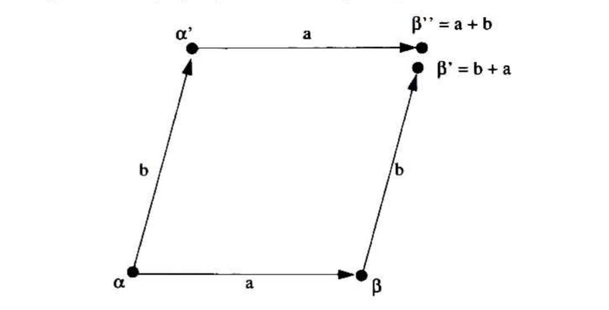 Grassmann recognizes that the two displacements (directed to then ) and (directed according to then ) do not necessarily give the same point ( would be different from if the space has a curvature).↩
Ibid., introduction, C, § 16.↩
Ibid., I, chapter 1, § 16.↩
This ‘independence’, like the velocity, is a quality in the sense of chapter III.↩
Grassmann, Die lineale Ausdehnungslehre, I, chapter 1, § 16.↩
Ibid., I, chapter 1, § 9: ‘This is why we look upon addition as first-step liaison and therefore multiplication as second-step liaison’ (see also H.G. Grassmann, ‘Sur les differents genres de multiplication’).↩
Defined by A.F. Möbius, Der baryzentrische Kalkul (Leipzig, 1827).↩
See H.G. Grasmann, Die geometrische Analyse geknüpft an die von Leibniz erfundene geometrische Charakteristik, and M. Otte, ‘The Ideas of Hermann Grassmann in the Context of the Mathematical and Philosophical Tradition since Leibniz’.↩
Franz von Baader (1765-1841) first studied medicine and the natural sciences, then went to stay in England. In 1826, he was named professor of philosophy and speculative theology. The quotations here are taken from Beitrage zur Elementarphysiologie (1797) and Uber das phthagoraische Quadrat in der Natur (1798).↩
J.G. Grassmann, Raumlehre, II, p. 194; reference given by M.J. Crowe, History of Vectorial Analysis (University of Notre Dame Press, 1967), 59.↩
H.G. Grassmann, Gesammelte mathematische und physikalische Werke, I, pp. 7-10.↩
Ibid.↩
Die lineale Ausdehnungslehre, I, 2, § 29.↩
Ibid., § 31.↩
Ibid., § 37.↩
Ibid.↩
Indeed, if with and nil, it can be immediately seen that .↩
Die lineale Ausdehnungslehre, I, 2, § 34; ‘Wir nennen diese Art der Multiplikation eine aussere …’↩
Ibid., I, 2, § 36.↩
Möbius had indeed discovered oriented volumes, but he had not seen that they could be obtained by multiplication of segments. Moreover, Grassmann does not miss the opportunity to emphasize his own originality.↩
As Dominique Flament has pointed out (1830-1930: A Century of Geometry (Springer Verlag), pp. 208-9), there is a notable difference in terminology between the 1844 and 1862 editions of Die lineale Ausdenungslehre. The 1862 edition resorts to more Latinate terms (progressivus Produckt; regressivus Produckt; parallelogramm) than that of 1844 (aussere Multiplikation, eigewandtes Produkt, Spateck).↩
We are referring to Rota et al.’s modern expression, ‘On the Exterior Calculus of Invariant Theory’.↩
H.G. Grassmann, Die lineale Ausdehnungslehre, I, 2, § 31.↩
Opposed volumes are only different by orientation.↩
H.G. Grassmann, Die lineale Ausdehnungslehre, II, III, § 125.↩
See G. Peano, Calcolo geometrico second l’ ‘Ausdehnungslehre’ di H. Grassmann, and Rota et al., ‘On the Exterior Calculus of Invariant Theory’. For the general construction of the condition , Rota uses the notation for the regressive product. We have kept to the notation with the bold point, similar to that of Grassmann, who uses a simple point, which can lead to confusion.↩
See C. Burali-Forti, Introduction a la geometrie differentielle suivant the methode de H. Grassmann, especially the beginning, for the algebraic sums of points, already defined by Möbius. It must not be forgotten that in the formula illustrated by figures 24b and 24c, , , , etc. are numbers.↩
See Rota et al., ‘On the Exterior Calculus of Invariant Theory’, p. 145.↩
One can thus write, combining the liaisons and the equation of the conic that runs through five given points : . ( is the running point of the conic). Much more generally, Grassmann showed that any algebraic curve of degree (in the case of Cartesian analytical geometry) is obtained by a series of ‘lineal’ constructions immediately, translated by a ‘word’, similar to the left-handed side of (E), the running point of figuring in it times.↩